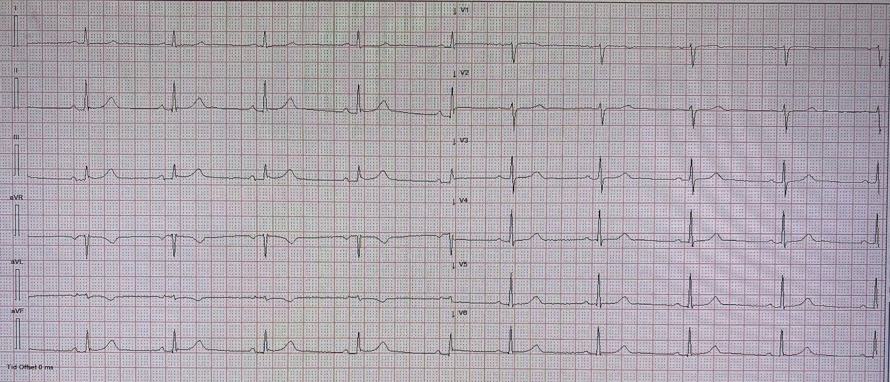
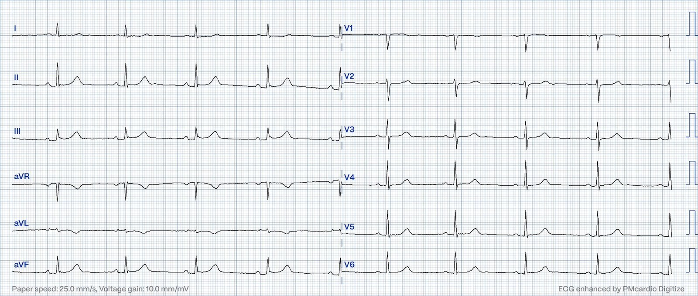
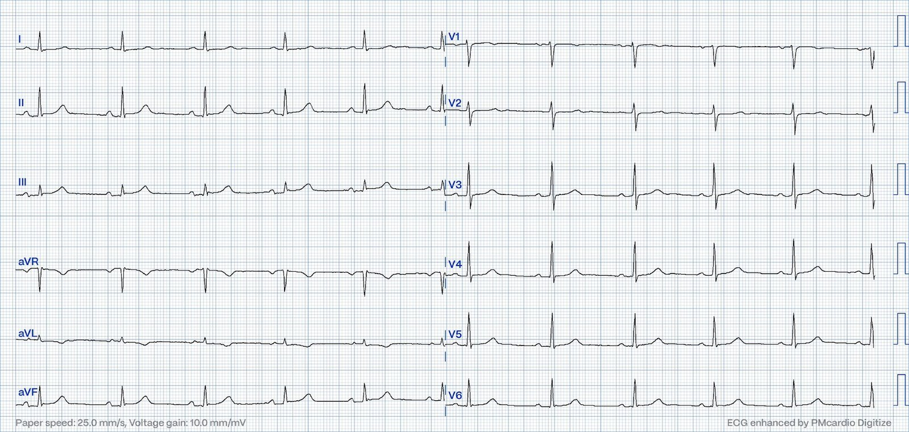
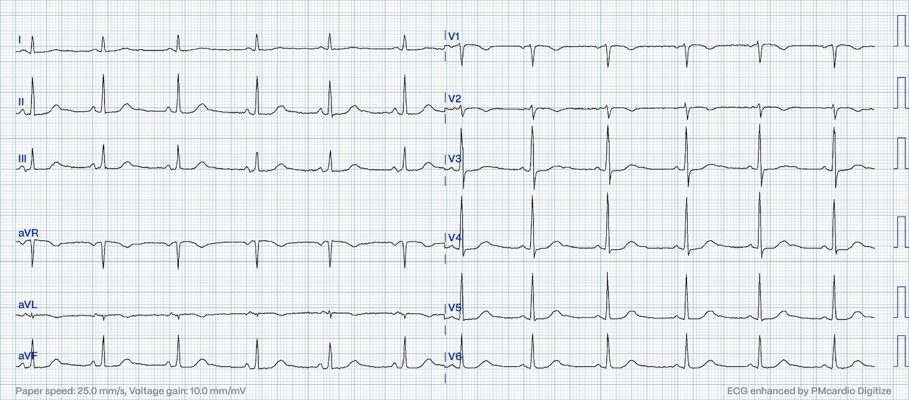
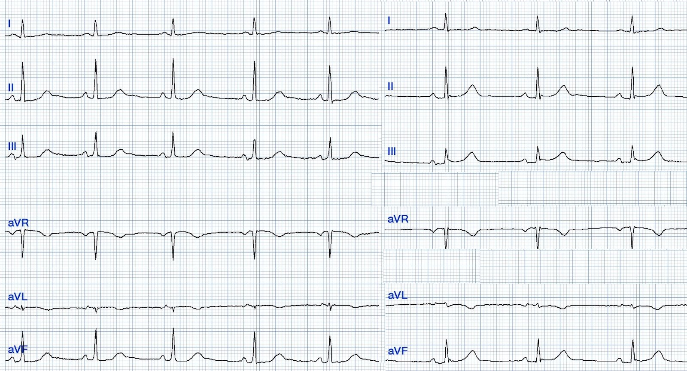
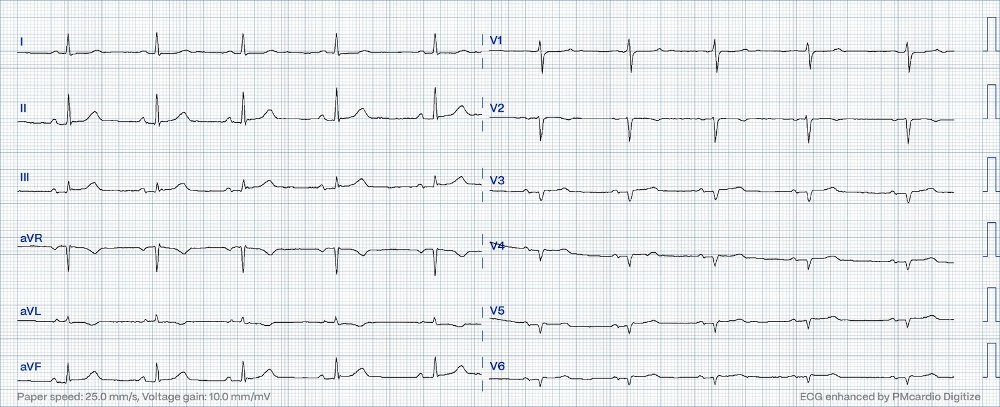
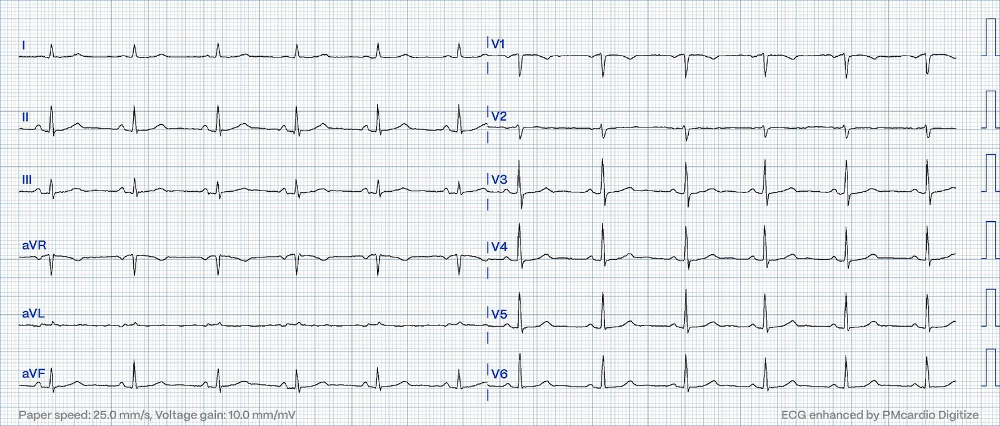
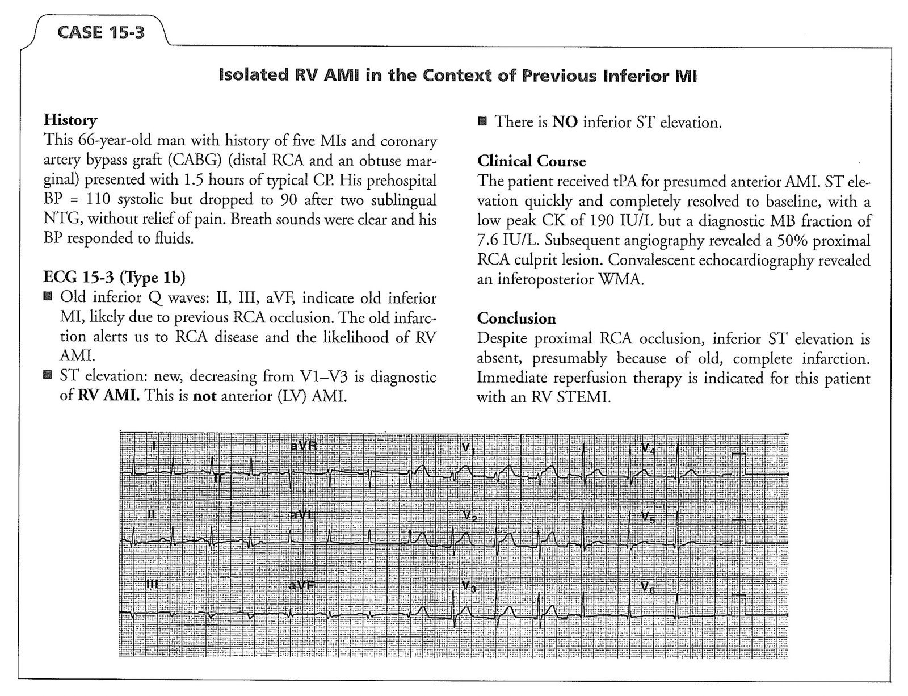
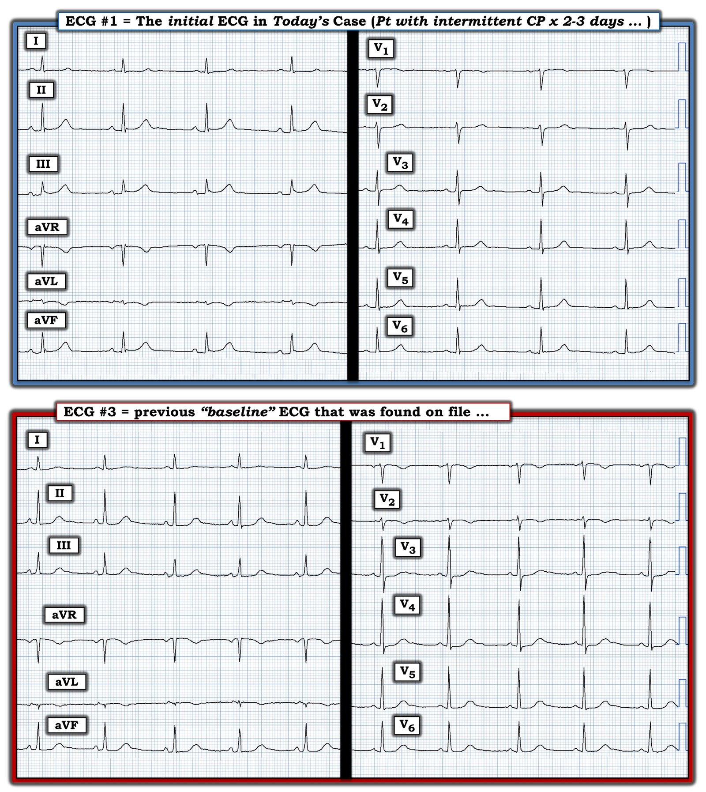

17/09/2023 — Khó chịu ở ngực và thất phải giãn. Chuyện gì đang xảy ra?
Bản dịch tiếng Việt của bài "Chest discomfort and a dilated right ventricle. What’s going on?" – Dr. Smith’s ECG Blog. Giữ nguyên toàn bộ 10 hình ảnh của bản gốc.
Tác giả: Magnus Nossen MD, bình duyệt và biên tập bởi Smith, Meyers, Grauer
Một phụ nữ ngoài 60 tuổi, hút thuốc lá, trước đây khỏe mạnh, đi khám sau 2-3 ngày khó chịu ở ngực từng cơn. Cảm giác khó chịu ở ngực được mô tả là đau nhói. Các cơn kéo dài 5-30 phút. Vào ngày đến khám, bà lại có một cơn khó chịu ở ngực kèm nôn và đau họng. Bà lo rằng có thể mình bị nhiễm trùng họng. Bà liên hệ với bác sĩ chăm sóc ban đầu. Do triệu chứng mơ hồ, và do bà có khó chịu ở ngực mà không có dấu hiệu lâm sàng của nhiễm trùng họng, bà được chuyển đi đánh giá thêm.
Khi nhập viện, bà vẫn còn khó chịu nhẹ ở ngực. Dấu hiệu sinh tồn không có gì đặc biệt, ngoại trừ huyết áp thấp ở mức giới hạn với huyết áp tâm thu khoảng 102 mmHg. Điện tâm đồ sau được ghi lại.


Ở đây chất lượng hình ảnh được tăng cường bằng ứng dụng PM Cardio. Bạn nghĩ gì?


Điện tâm đồ lúc nhập viện cho thấy nhịp xoang (SR) với phức bộ QRS hẹp. Tăng tiến sóng R bình thường ở các chuyển đạo trước tim, không có bằng chứng thiếu máu cục bộ. Ở các chuyển đạo chi có sóng T đảo ngược ở chuyển đạo aVL, với phức bộ QRS biên độ thấp đứng trước sóng T. Có ST chênh lên dạng lõm (concave-up) nhẹ ở các chuyển đạo thành dưới, kèm hình ảnh có vẻ là sóng J hình thành rõ.
Kết quả troponin I đầu tiên là 3174 ng/l, lúc đó một điện tâm đồ ghi lại đã được chỉ định.


Siêu âm tim tại giường đã được thực hiện.
Siêu âm tim tại giường cho thấy thất phải (RV) giãn và giảm động, với đường kính trong cuối tâm trương (RVIDd) ở đáy khoảng 4,0cm. RV > LV. Thấy rõ vách liên thất bị dẹt với dấu hiệu chữ D (D-sign) ở mặt cắt trục ngắn cạnh ức. Có dấu hiệu McConnell. (có thể không thấy rõ trên các đoạn phim siêu âm này) Doppler liên tục (CW) tại van ba lá cho thấy vận tốc dòng hở ba lá (TR) tối đa 2,55m/s với chênh áp TRP 26mmHg.
Các giải thích có thể có cho các dấu hiệu trên siêu âm tim được xếp nhóm như sau:
- 1) Các tình trạng gây quá tải thể tích thất phải. (Ví dụ thông liên nhĩ (ASD) lớn, bất thường hồi lưu tĩnh mạch phổi bán phần, hở van ba lá đáng kể, bệnh van tim do carcinoid, v.v.)
- 2) Các tình trạng gây quá tải áp lực thất phải. (Bất kỳ nguyên nhân nào gây tăng áp phổi. Ví dụ COPD, tăng áp động mạch phổi (PAH) vô căn, thuyên tắc phổi (PE) cấp hoặc mạn, hẹp van động mạch phổi, v.v.)
- 3) Các tình trạng ảnh hưởng đến sức co bóp cơ tim thất phải, như ARVD hoặc nhồi máu thất phải
Các điện tâm đồ thực sự không cho thấy dấu hiệu nào của giãn hay phì đại thất phải mạn tính. Trục bình thường, tăng tiến sóng R bình thường ở các chuyển đạo trước tim và không có bất thường dẫn truyền trong thất. Hơn nữa, không có thay đổi ST-T ở các chuyển đạo trước tim đầu tiên như có thể dự kiến nếu tình trạng giãn là do thuyên tắc phổi hoặc ARVD.
Lúc này, một điện tâm đồ cũ lưu trong hồ sơ được tìm thấy để so sánh.


Dưới đây, các chuyển đạo chi của điện tâm đồ nền (bên trái) được đặt cạnh các chuyển đạo chi của điện tâm đồ lúc nhập viện (bên phải).
Khi đặt cạnh nhau, có thể nhận ra tính tối cấp của các sóng T thành dưới. Giờ đây cũng dễ nhận ra hơn rằng sóng T đảo ngược đầy đặn hơn ở aVL hẳn là thay đổi soi gương (reciprocal) của sóng T tối cấp thành dưới. Ngoài ra, nhìn qua kính nhìn hồi cứu (retrospectoscope), đoạn ST đẳng điện ở chuyển đạo V2 trên điện tâm đồ lúc nhập viện trở nên khá đáng ngờ là có tổn thương thành sau.
Chuyển đạo chi nền Chuyển đạo chi lúc nhập viện


Lưu ý sóng T ở II, III và aVF lớn hơn đáng kể
Tự bản thân chúng thì chưa đủ để chẩn đoán, nhưng rất đáng ngờ.
Chỉ riêng việc có đau ngực và troponin tăng rất cao đã đủ để kích hoạt phòng thông tim (cath lab), nhưng ở đây bạn có thể thấy sóng T tối cấp có thể kín đáo đến mức nào.
Dựa trên các thay đổi điện tâm đồ, các dấu hiệu trên siêu âm tim, nồng độ troponin và triệu chứng khởi phát nhanh, bệnh cảnh lâm sàng dường như được giải thích tốt nhất bởi một quá trình cấp tính nào đó, khiến thuyên tắc phổi hoặc nhồi máu cơ tim cấp là khả năng cao nhất. Một OMI cấp do RCA kèm tổn thương thành dưới và thất phải phù hợp hơn PE nhiều trong ca này: thực sự không có triệu chứng hô hấp, độ bão hòa O2 và các dấu hiệu sinh tồn khác không có gì đặc biệt. Một điện tâm đồ chuyển đạo bên phải đã được ghi và được trình bày dưới đây.


Điện tâm đồ chuyển đạo bên phải cho thấy không có sóng R thực sự nào ở V3R-V6R. Ngoài ra có ST chênh lên kín đáo nhưng đáng kể xét theo tỷ lệ ở chính các chuyển đạo này. Các chuyển đạo chi cũng có vẻ cho thấy các dấu hiệu OMI thành dưới tiến triển thêm. Phòng thông tim được kích hoạt và bệnh nhân được phát hiện tắc 100% RCA đoạn gần với dòng chảy TIMI 0. Sau PCI, bệnh nhân tụt huyết áp nặng và rơi vào tình trạng “sốc”. Bà ổn định nhờ truyền dobutamine và levosimendan, và các thuốc này có thể ngừng sau 24 giờ. Troponin T đạt đỉnh 2074 ng/L (rất cao, điển hình của OMI/STEMI). Biên độ dịch chuyển tâm thu của mặt phẳng vòng van ba lá (TAPSE) cải thiện từ 15mm lên 19mm trong 24 giờ đầu. Phân suất tống máu thất trái (LV EF) là 57% trên siêu âm tim chính thức.
Ca này là một trường hợp tắc RCA với dấu hiệu OMI thành dưới trên điện tâm đồ và tổn thương thất phải chiếm ưu thế trên siêu âm tim.
Nhồi máu thất phải đơn độc thuần túy chỉ gặp ở bệnh nhân có động mạch mũ (Cx) ưu thế, hoặc ở bệnh nhân đã từng bị nhồi máu cơ tim thành dưới rồi về sau bị tắc RCA đoạn gần. Nhồi máu thất phải đơn độc sẽ không cho thấy dấu hiệu OMI thành dưới. Nhồi máu thất phải thường có ST chênh lên hoặc các dấu hiệu OMI ở các chuyển đạo trước tim bên phải, nằm trên thất phải.
Đây là điện tâm đồ lúc ra viện, 3 ngày sau PCI.


Đây là một ví dụ về nhồi máu thất phải đơn độc, từ sách của Dr. Smith:


Những điểm cần học:
1) OMI có thể rất kín đáo và nhồi máu thất phải có thể biểu hiện kém trên điện tâm đồ chuẩn.
2) Đau ngực điển hình kéo dài dai dẳng kèm troponin tăng đáng kể là OMI cho đến khi chứng minh được điều ngược lại, bất kể điện tâm đồ thế nào.
3) Suy thất phải gây tụt huyết áp nhưng KHÔNG gây phù phổi (khác với suy thất trái)
4) Ghi lại điện tâm đồ nhiều lần, ghi điện tâm đồ chuyển đạo bên phải và siêu âm tim tại giường có thể hữu ích trong chẩn đoán hội chứng vành cấp (ACS).
5) Dấu hiệu McConnell có thể gặp cả trong nhồi máu thất phải lẫn trong quá tải áp lực thất phải cấp như ở PE diện rộng
Đây là một ca rất hay về nhồi máu cơ tim thất phải với cả dấu hiệu chữ D lẫn dấu hiệu McConnell:
Inferior STEMI with AV Block, Cardiogenic Shock and ST elevation in V1 (STEMI thành dưới kèm blốc AV, sốc tim và ST chênh lên ở V1)

===================================
BÌNH LUẬN CỦA TÔI, bởi KEN GRAUER, MD (17/9/2023):
===================================
Tôi rất thích những ca mà một kết cục bất ngờ lại được đi đến một cách logic như vậy. Xin CẢM ƠN Dr. Magnus Nossen đã chia sẻ ca này với chúng tôi.
- Tôi tập trung bình luận vào điện tâm đồ ban đầu trong ca hôm nay — mà tôi đã tái hiện ở Hình 1, và tôi đã thêm vào đó bản ghi trước đây tìm thấy trong hồ sơ.


Suy nghĩ của tôi về điện tâm đồ ban đầu ở Hình 1:
Những điểm then chốt trong bệnh sử của bệnh nhân hôm nay — là các triệu chứng đau ngực (CP — Chest Pain) của bà xuất hiện từng cơn trong khoảng 2-3 ngày — không nói rõ triệu chứng nặng nhất vào lúc nào trong khoảng thời gian này. Do đó — thời điểm khởi phát của bất kỳ biến cố cấp tính nào có thể đã xảy ra là không chắc chắn. Xét bệnh sử này — tôi thấy điện tâm đồ #1 đáng lo ngại vì các dấu hiệu sau:
- Có ST chênh lên ở mỗi chuyển đạo trong 3 chuyển đạo thành dưới. Mặc dù mức ST chênh lên không lớn ở điện tâm đồ #1, và có khía điểm J như thường gặp ở các biến thể tái cực — đoạn ST trước sóng T ở các chuyển đạo thành dưới này thực sự bị thẳng đuỗn.
- Chuyển đạo aVL chắc chắn không bình thường. Mặc dù biên độ QRS rất nhỏ ở chuyển đạo này khiến việc đánh giá khó khăn — điểm J ở chuyển đạo aVL thực sự chênh xuống, đoạn ST ở chuyển đạo này có dạng vòm (coving) bất thường — và sóng T so với biên độ QRS thì quá đầy đặn (hypervoluminous) và mất tương xứng rõ rệt. Hình dạng của sóng ST-T ở chuyển đạo aVL này là một hình soi gương ngược chiều, thu nhỏ, của sóng ST-T ở chuyển đạo III — điều mà ở một bệnh nhân đau ngực rõ ràng có thể phản ánh thay đổi soi gương của một quá trình cấp tính mới xảy ra hoặc đang diễn ra.
- Ủng hộ cho việc các dấu hiệu này ở chuyển đạo aVL là không bình thường — chuyển đạo bên cao còn lại ( = chuyển đạo I) cũng có hình dạng không bình thường (tức là, đoạn ST ở chuyển đạo I hoàn toàn dẹt — kèm sóng T nhỏ hơn dự kiến).
- NHẬN ĐỊNH CỦA TÔI về các chuyển đạo chi: Tôi nghĩ các dấu hiệu ở chuyển đạo chi nêu trên trong điện tâm đồ #1 là chưa đủ để chẩn đoán — nhưng rõ ràng đáng lo ngại. Ở người phụ nữ ngoài 60 tuổi này, với bệnh sử 2-3 ngày đau ngực từng cơn (có thể phù hợp với một biến cố xảy ra vào bất kỳ thời điểm nào trong khoảng thời gian đó) — tôi nghĩ các dấu hiệu điện tâm đồ trên có thể phản ánh OMI thành dưới mới xảy ra. Đánh giá thêm (và lý tưởng là tìm được một bản ghi trước đây để so sánh) sẽ rất hữu ích.
Về các chuyển đạo trước tim ở điện tâm đồ #1:
- Hình dạng sóng ST-T ở các chuyển đạo V2 đến V6 không bình thường. Thay vào đó — đoạn ST ở mỗi chuyển đạo trong 5 chuyển đạo này đều dẹt bất thường. Điều này đặc biệt rõ ở các chuyển đạo phía trước V2 và V3 — vốn bình thường có một chút ST chênh lên dốc lên. Khi có các dấu hiệu ở chuyển đạo chi nêu trên — việc thiếu ST chênh lên nhẹ, dốc lên ở các chuyển đạo V2,V3 — đặc biệt khi đi kèm sóng R ở chuyển đạo V3 đột ngột trở nên cao (trong khi biên độ sóng r rất nhỏ ở chuyển đạo V2 kế bên) — có thể phù hợp với nhồi máu thành sau mới xảy ra, đặc biệt khi các chuyển đạo chi đã gợi ý OMI thành dưới mới xảy ra.
Ca bệnh tiếp diễn:
- Giá trị troponin ban đầu tăng rõ rệt!
- Điện tâm đồ ghi lại (Dr. Nossen đã trình bày ở trên) — không cho thấy thay đổi đáng kể.
- Siêu âm tim tại giường đã được thực hiện.
BÌNH LUẬN: Như được thể hiện rất ấn tượng trên siêu âm tim tại giường của Dr. Nossen — thất phải giãn rất lớn và giảm động, thu hẹp chẩn đoán phân biệt về các bệnh lý mà ông đã liệt kê ở phần bàn luận phía trên — trong đó việc không có dấu hiệu điện tâm đồ nào phù hợp với bệnh phổi cùng với troponin tăng rõ rệt hướng tới nhồi máu cơ tim thất phải (RV MI) cấp là chẩn đoán có khả năng nhất. Các khía cạnh thú vị khác của ca hôm nay gồm:
- So sánh với bản ghi “nền“ ( = điện tâm đồ #3 ở Hình 1) — xác nhận rằng các thay đổi sóng ST-T kín đáo-nhưng-có-thật ở chuyển đạo chi nêu trên trong điện tâm đồ #1 là mới, vì trên điện tâm đồ #3 nền không có ST chênh lên ở các chuyển đạo thành dưới và không có ST chênh xuống ở chuyển đạo aVL.
- Dù vậy — vùng chuyển tiếp sớm hơn dự kiến và đoạn ST dẹt ở các chuyển đạo V3 đến V6 đã có mặt trên điện tâm đồ nền (thậm chí còn có ST chênh xuống nhẹ ở bản ghi trước đó) — vì vậy các thay đổi ở chuyển đạo trước tim mà tôi nghi là biểu hiện OMI thành sau trên điện tâm đồ #1 không phải là mới.
- Cuối cùng (theo Dr. Nossen) — điện tâm đồ chuyển đạo bên phải đã được ghi thực sự có cho thấy ST chênh lên xác nhận RV MI, dù mức ST chênh lên ở bên phải chỉ khiêm tốn.
Những điểm cuối cùng:
“Tin tốt” — là siêu âm tim tại giường đã đóng vai trò then chốt trong việc nhận ra nhồi máu cơ tim thất phải cấp.
- Việc thấy thất phải giãn rõ và co bóp kém trên siêu âm tim — đã giúp ích cho việc đọc điện tâm đồ trên lâm sàng. So sánh điện tâm đồ ban đầu với bản ghi “nền” trước đó — đã xác nhận OMI thành dưới cấp, điều này “khớp” với kết quả thông tim là tắc cấp RCA đoạn gần.
- Tôi nghi rằng các thay đổi điện tâm đồ có thật nhưng tương đối khiêm tốn thấy trên các điện tâm đồ của ca hôm nay có thể là do: i) Biến cố cấp tính trong ca hôm nay có thể đã bắt đầu từ 2 hoặc 3 ngày trước (như bệnh sử gợi ý); và, ii) ST chênh lên ở chuyển đạo bên phải đi kèm với nhồi máu thất phải cấp có xu hướng là một biến cố thoáng qua, thường tự hết trong vòng 24 giờ (Nagam và cs. — Perm J: Vol. 21, 2017).